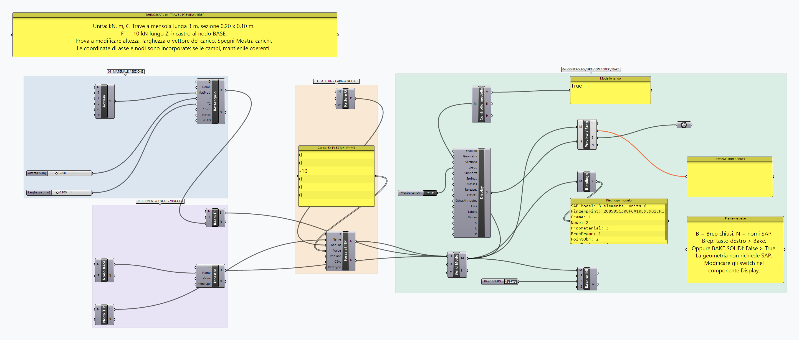
01 Trave carico preview bake
Trave a mensola con carico nodale, slider di sezione, preview e bake solido.
Modellazione localeApri GH · GHX · Guida
01 Modello · 02 Materiali · 03 Sezioni beam · 07 Elementi · 08 Vincoli e molle · 12 Load pattern · 13 Carichi nodali · 33 Preview e bake
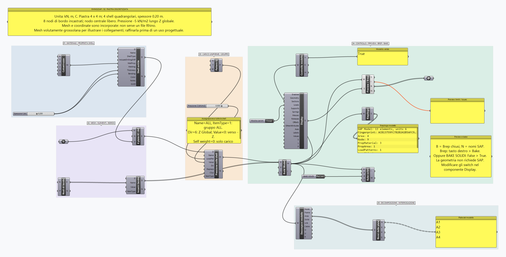
02 Piastra mesh pressione
Piastra 2 x 2 shell, pressione uniforme e vincoli di bordo.
Modellazione localeApri GH · GHX · Guida
01 Modello · 02 Materiali · 05 Piastre e solidi · 07 Elementi · 08 Vincoli e molle · 12 Load pattern · 15 Carichi plate · 33 Preview e bake · 34 Utility
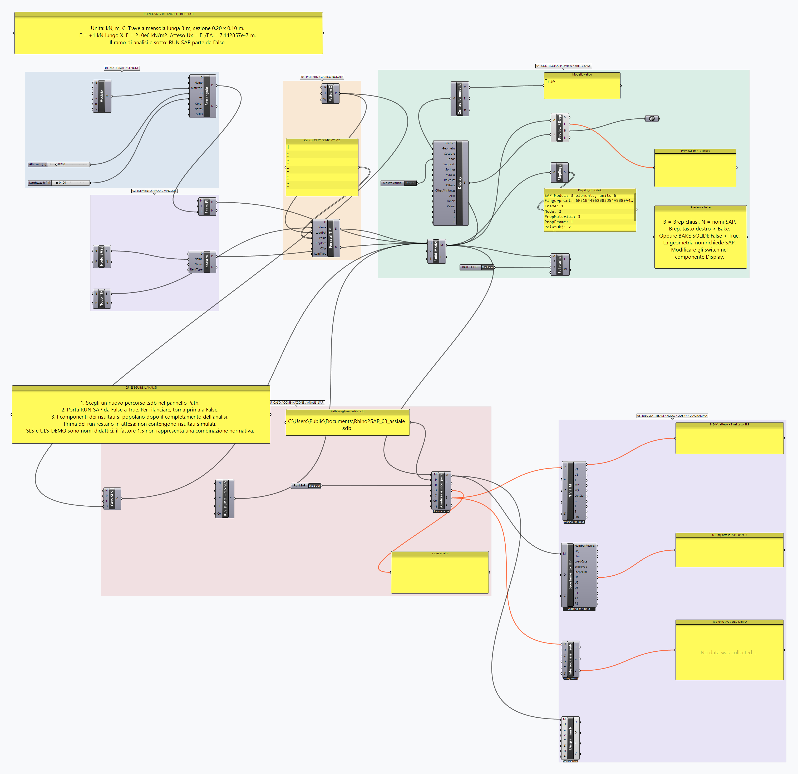
03 Analisi assiale risultati
Analisi assiale, combinazione e confronto con lo spostamento teorico FL/EA.
Analisi SAP su richiestaApri GH · GHX · Guida
01 Modello · 02 Materiali · 03 Sezioni beam · 07 Elementi · 08 Vincoli e molle · 12 Load pattern · 13 Carichi nodali · 19 Casi statici · 25 Combinazioni · 26 Analisi e file · 27 Risultati nodali · 28 Risultati beam · 32 Risultati e query · 33 Preview e bake
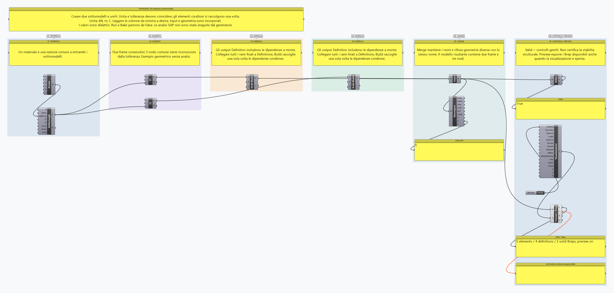
04 Creazione unione modelli
Creare due sottomodelli e unirli. Unita e tolleranza devono coincidere; gli elementi condivisi si raccolgono una volta.
Modellazione localeApri GH · GHX · Guida
01 Modello · 02 Materiali · 03 Sezioni beam · 07 Elementi · 33 Preview e bake
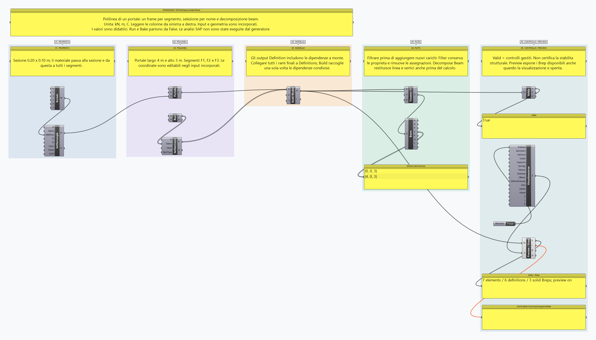
05 Polilinea portale frame
Polilinea di un portale: un frame per segmento, selezione per nome e decomposizione beam.
Modellazione localeApri GH · GHX · Guida
01 Modello · 02 Materiali · 03 Sezioni beam · 07 Elementi · 08 Vincoli e molle · 28 Risultati beam · 33 Preview e bake · 34 Utility
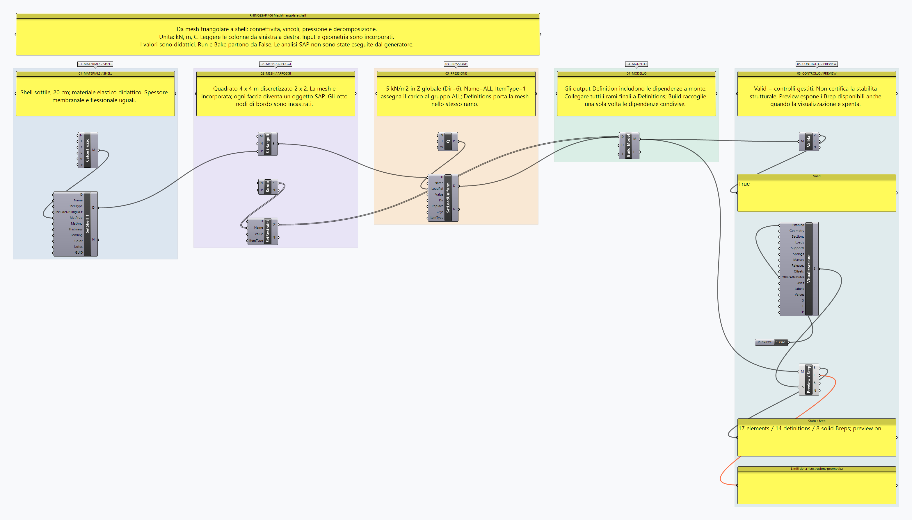
06 Mesh triangolare shell
Da mesh triangolare a shell: connettivita, vincoli, pressione e decomposizione.
Modellazione localeApri GH · GHX · Guida
01 Modello · 02 Materiali · 05 Piastre e solidi · 07 Elementi · 08 Vincoli e molle · 12 Load pattern · 15 Carichi plate · 33 Preview e bake
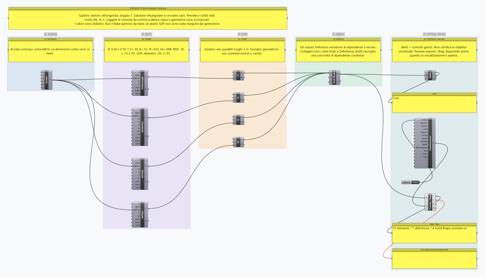
07 Sezioni rettangolo I tubo pipe
Quattro sezioni: rettangolare, doppio T, tubolare rettangolare e circolare cavo. Preview e solidi reali.
Modellazione localeApri GH · GHX · Guida
01 Modello · 02 Materiali · 03 Sezioni beam · 07 Elementi · 33 Preview e bake
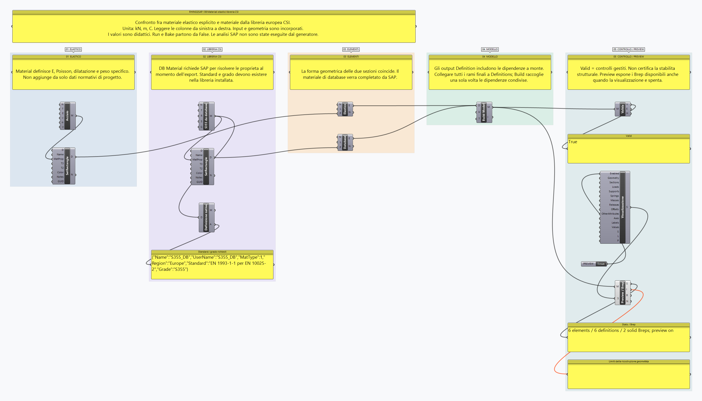
08 Materiali elastici libreria CSI
Confronto fra materiale elastico esplicito e materiale dalla libreria europea CSI.
Modellazione localeApri GH · GHX · Guida
01 Modello · 02 Materiali · 03 Sezioni beam · 07 Elementi · 33 Preview e bake · 34 Utility
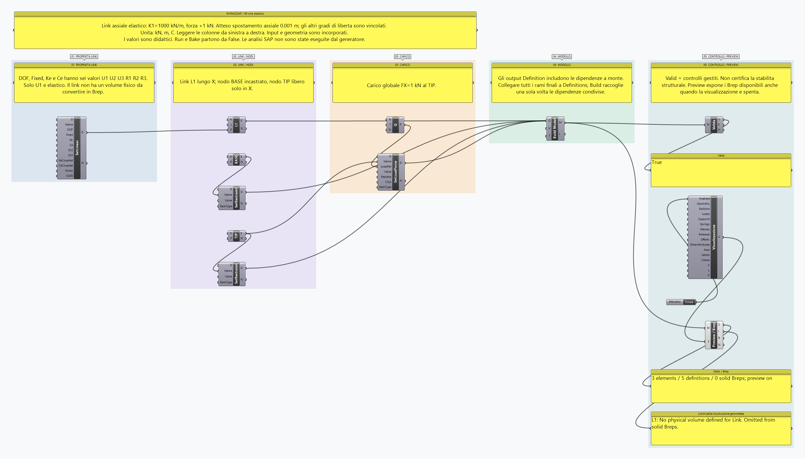
09 Link elastico
Link assiale elastico: K1=1000 kN/m, forza +1 kN. Atteso spostamento assiale 0.001 m; gli altri gradi di liberta sono vincolati.
Modellazione localeApri GH · GHX · Guida
01 Modello · 06 Link e cavi · 07 Elementi · 08 Vincoli e molle · 12 Load pattern · 13 Carichi nodali · 33 Preview e bake
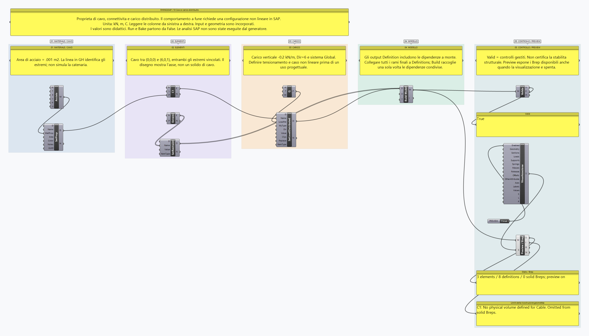
10 Cavo e carico distribuito
Proprieta di cavo, connettivita e carico distribuito. Il comportamento a fune richiede una configurazione non lineare in SAP.
Modellazione localeApri GH · GHX · Guida
01 Modello · 02 Materiali · 06 Link e cavi · 07 Elementi · 08 Vincoli e molle · 12 Load pattern · 16 Altri carichi · 33 Preview e bake
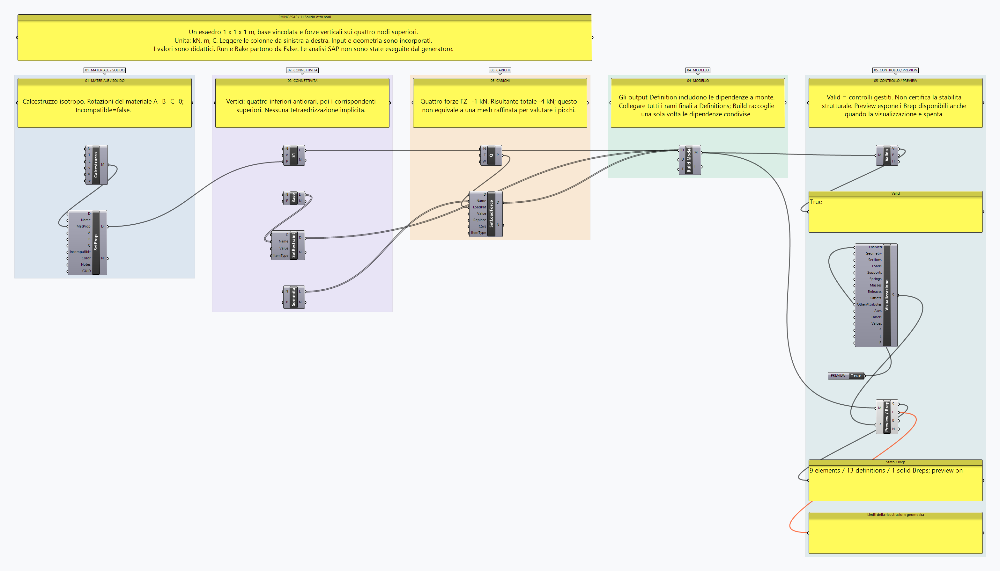
11 Solido otto nodi
Un esaedro 1 x 1 x 1 m, base vincolata e forze verticali sui quattro nodi superiori.
Modellazione localeApri GH · GHX · Guida
01 Modello · 02 Materiali · 05 Piastre e solidi · 07 Elementi · 08 Vincoli e molle · 12 Load pattern · 13 Carichi nodali · 33 Preview e bake
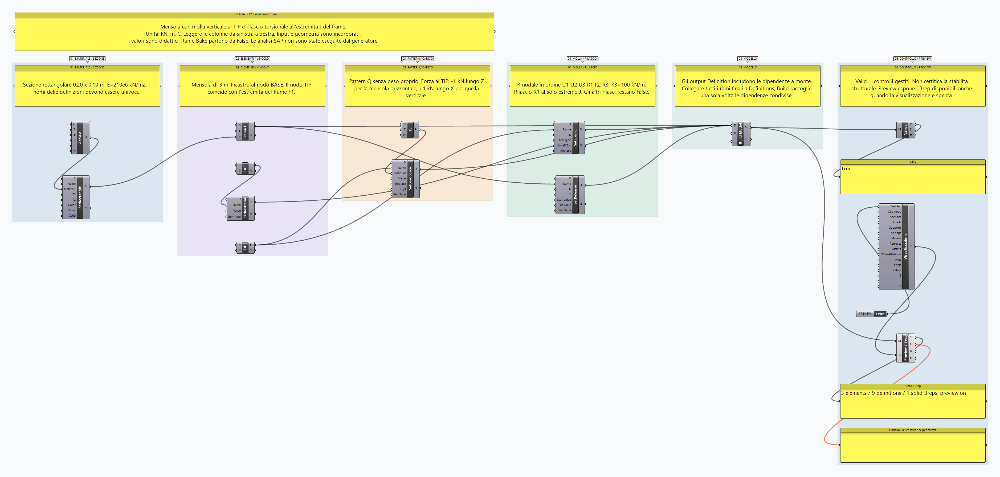
12 Vincoli molle rilasci
Mensola con molla verticale al TIP e rilascio torsionale all'estremita J del frame.
Modellazione localeApri GH · GHX · Guida
01 Modello · 02 Materiali · 03 Sezioni beam · 07 Elementi · 08 Vincoli e molle · 12 Load pattern · 13 Carichi nodali · 33 Preview e bake
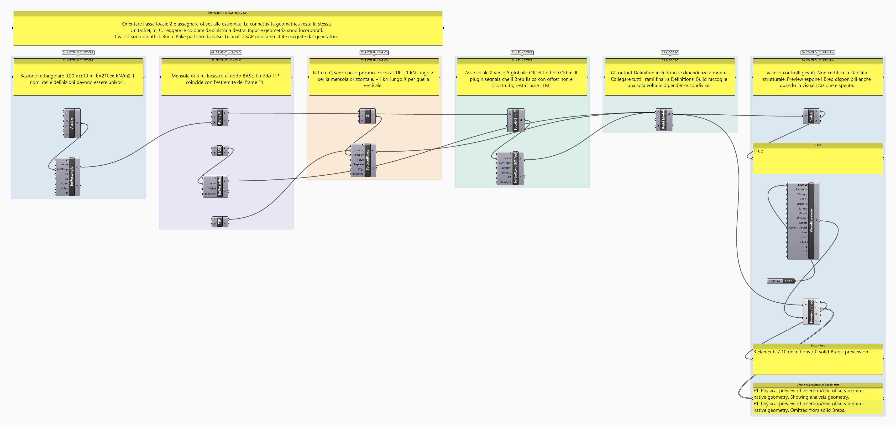
13 Assi locali offset
Orientare l'asse locale 2 e assegnare offset alle estremita. La connettivita geometrica resta la stessa.
Modellazione localeApri GH · GHX · Guida
01 Modello · 02 Materiali · 03 Sezioni beam · 07 Elementi · 08 Vincoli e molle · 09 Assi e offset · 12 Load pattern · 13 Carichi nodali · 33 Preview e bake
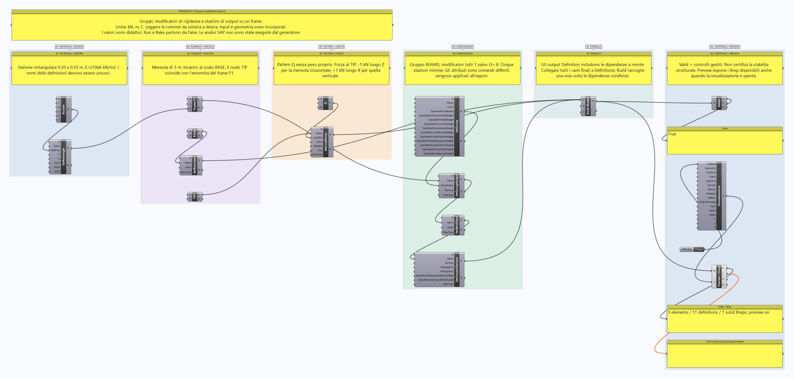
14 Gruppi modificatori stazioni
Gruppi, modificatori di rigidezza e stazioni di output su un frame.
Modellazione localeApri GH · GHX · Guida
01 Modello · 02 Materiali · 03 Sezioni beam · 07 Elementi · 08 Vincoli e molle · 10 Mesh e assegnazioni · 12 Load pattern · 13 Carichi nodali · 33 Preview e bake
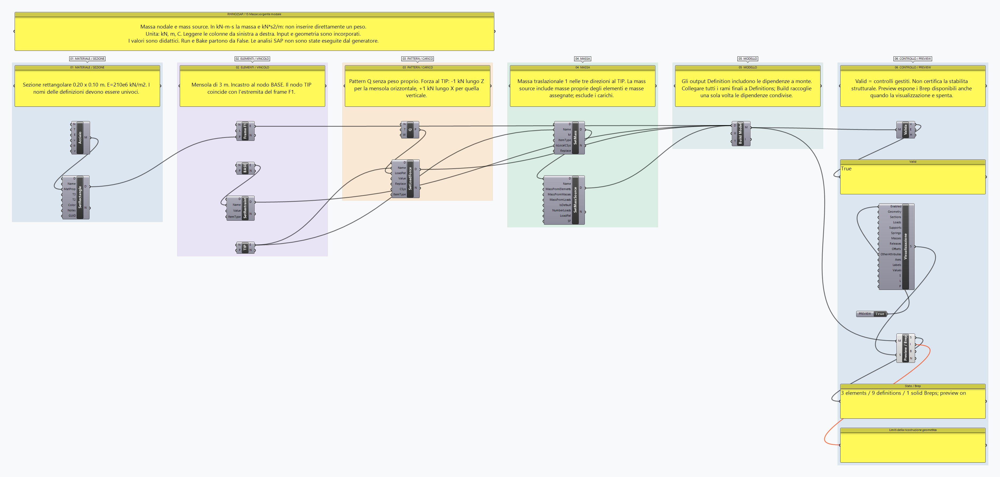
15 Masse sorgente modale
Massa nodale e mass source. In kN-m-s la massa e kN*s2/m: non inserire direttamente un peso.
Modellazione localeApri GH · GHX · Guida
01 Modello · 02 Materiali · 03 Sezioni beam · 07 Elementi · 08 Vincoli e molle · 11 Masse · 12 Load pattern · 13 Carichi nodali · 33 Preview e bake
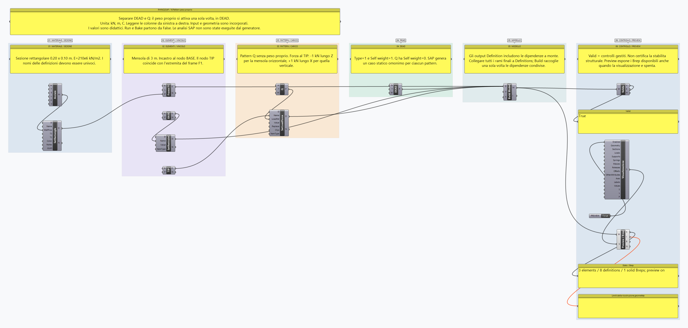
16 Pattern peso proprio
Separare DEAD e Q: il peso proprio si attiva una sola volta, in DEAD.
Modellazione localeApri GH · GHX · Guida
01 Modello · 02 Materiali · 03 Sezioni beam · 07 Elementi · 08 Vincoli e molle · 12 Load pattern · 13 Carichi nodali · 33 Preview e bake
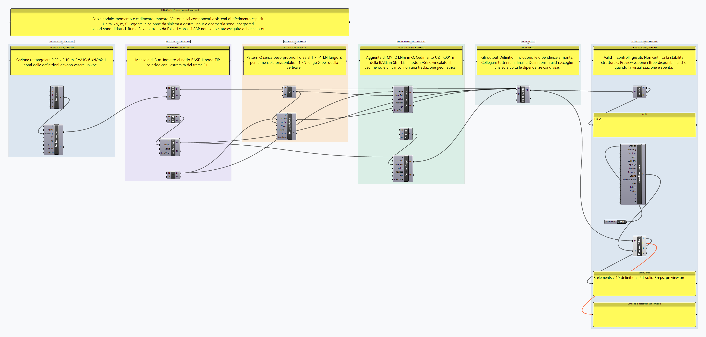
17 Forze momenti cedimenti
Forza nodale, momento e cedimento imposto. Vettori a sei componenti e sistemi di riferimento espliciti.
Modellazione localeApri GH · GHX · Guida
01 Modello · 02 Materiali · 03 Sezioni beam · 07 Elementi · 08 Vincoli e molle · 12 Load pattern · 13 Carichi nodali · 33 Preview e bake
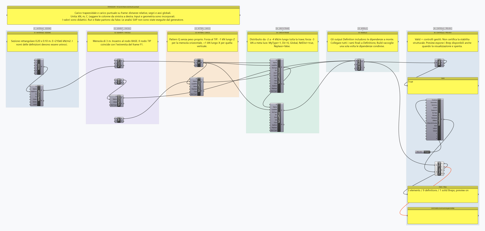
18 Carichi frame distribuiti puntuali
Carico trapezoidale e carico puntuale su frame: distanze relative, segni e assi globali.
Modellazione localeApri GH · GHX · Guida
01 Modello · 02 Materiali · 03 Sezioni beam · 07 Elementi · 08 Vincoli e molle · 12 Load pattern · 13 Carichi nodali · 14 Carichi beam · 33 Preview e bake
19 Plate pressione mesh SAP
Pressione uniforme sulle shell e automesh SAP. La mesh GH degli oggetti e la mesh di analisi SAP sono livelli diversi.
Modellazione localeApri GH · GHX · Guida
01 Modello · 02 Materiali · 05 Piastre e solidi · 07 Elementi · 08 Vincoli e molle · 10 Mesh e assegnazioni · 12 Load pattern · 15 Carichi plate · 33 Preview e bake
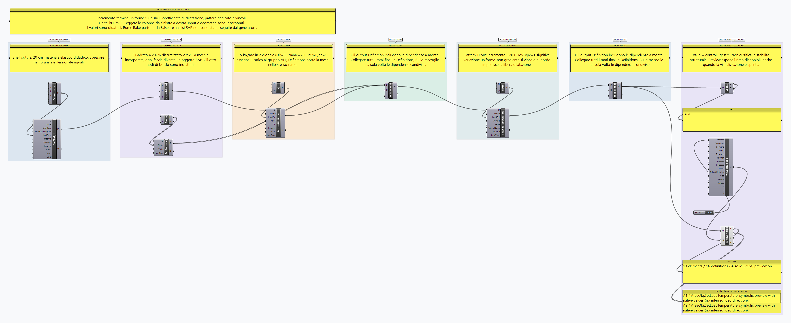
20 Temperatura plate
Incremento termico uniforme sulle shell: coefficiente di dilatazione, pattern dedicato e vincoli.
Modellazione localeApri GH · GHX · Guida
01 Modello · 02 Materiali · 05 Piastre e solidi · 07 Elementi · 08 Vincoli e molle · 12 Load pattern · 15 Carichi plate · 33 Preview e bake
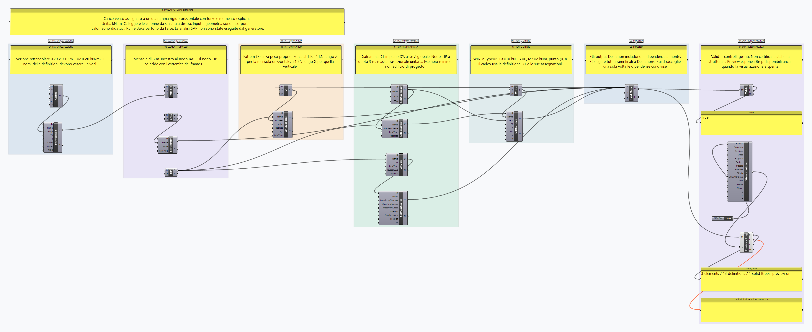
21 Vento diaframma
Carico vento assegnato a un diaframma rigido orizzontale con forze e momento espliciti.
Modellazione localeApri GH · GHX · Guida
01 Modello · 02 Materiali · 03 Sezioni beam · 07 Elementi · 08 Vincoli e molle · 11 Masse · 12 Load pattern · 13 Carichi nodali · 17 Vento · 33 Preview e bake
22 Sisma coefficiente utente
Forza sismica equivalente da coefficiente utente. Valori dimostrativi, senza applicazione di una normativa.
Modellazione localeApri GH · GHX · Guida
01 Modello · 02 Materiali · 03 Sezioni beam · 07 Elementi · 08 Vincoli e molle · 11 Masse · 12 Load pattern · 13 Carichi nodali · 18 Sisma · 33 Preview e bake
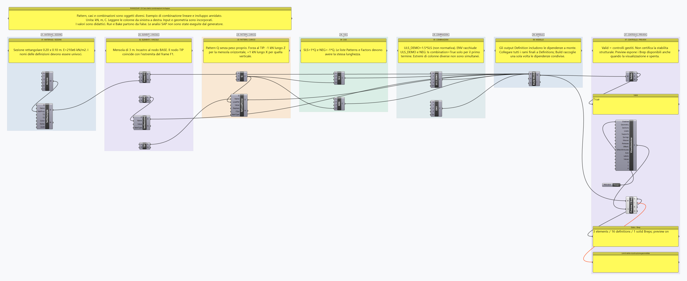
23 Casi statici combinazioni inviluppo
Pattern, casi e combinazioni sono oggetti diversi. Esempio di combinazione lineare e inviluppo annidato.
Modellazione localeApri GH · GHX · Guida
01 Modello · 02 Materiali · 03 Sezioni beam · 07 Elementi · 08 Vincoli e molle · 12 Load pattern · 13 Carichi nodali · 19 Casi statici · 25 Combinazioni · 33 Preview e bake
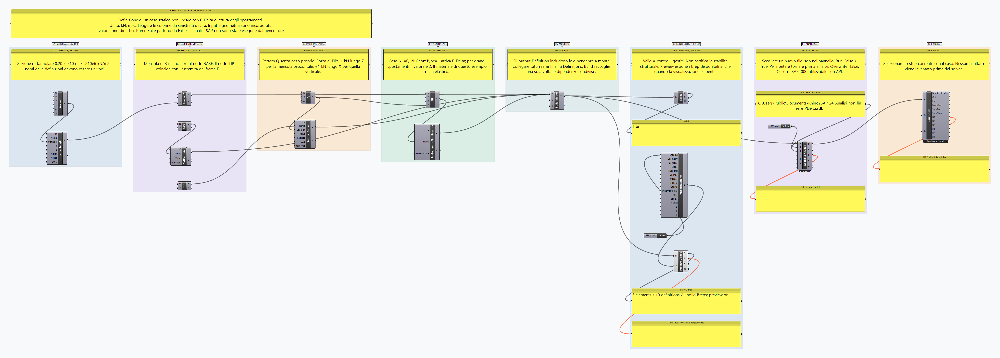
24 Analisi non lineare PDelta
Definizione di un caso statico non lineare con P-Delta e lettura degli spostamenti.
Analisi SAP su richiestaApri GH · GHX · Guida
01 Modello · 02 Materiali · 03 Sezioni beam · 07 Elementi · 08 Vincoli e molle · 12 Load pattern · 13 Carichi nodali · 20 Casi non lineari · 26 Analisi e file · 27 Risultati nodali · 33 Preview e bake
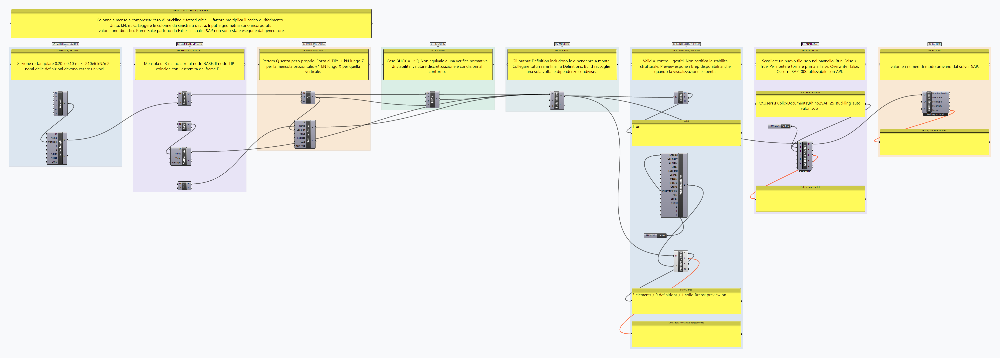
25 Buckling autovalori
Colonna a mensola compressa: caso di buckling e fattori critici. Il fattore moltiplica il carico di riferimento.
Analisi SAP su richiestaApri GH · GHX · Guida
01 Modello · 02 Materiali · 03 Sezioni beam · 07 Elementi · 08 Vincoli e molle · 12 Load pattern · 13 Carichi nodali · 19 Casi statici · 26 Analisi e file · 31 Risultati modali · 33 Preview e bake
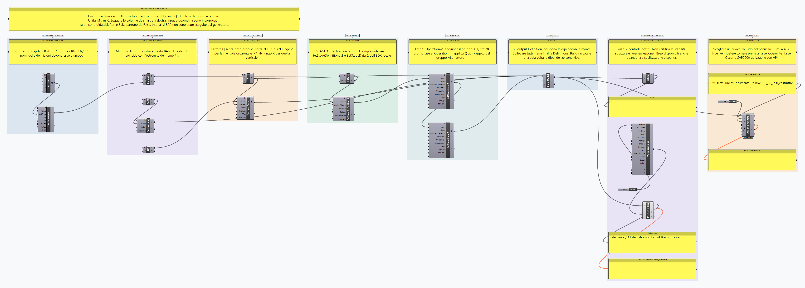
26 Fasi costruttive
Due fasi: attivazione della struttura e applicazione del carico Q. Durate nulle, senza reologia.
Analisi SAP su richiestaApri GH · GHX · Guida
01 Modello · 02 Materiali · 03 Sezioni beam · 07 Elementi · 08 Vincoli e molle · 12 Load pattern · 13 Carichi nodali · 21 Fasi costruttive · 26 Analisi e file · 33 Preview e bake
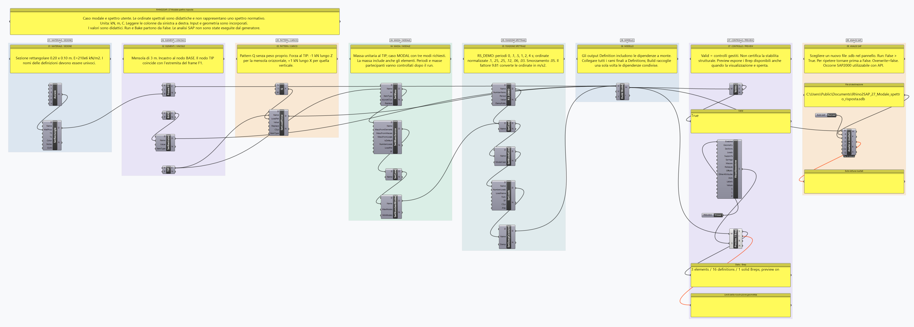
27 Modale spettro risposta
Caso modale e spettro utente. Le ordinate spettrali sono didattiche e non rappresentano uno spettro normativo.
Analisi SAP su richiestaApri GH · GHX · Guida
01 Modello · 02 Materiali · 03 Sezioni beam · 07 Elementi · 08 Vincoli e molle · 11 Masse · 12 Load pattern · 13 Carichi nodali · 22 Modale e spettri · 26 Analisi e file · 33 Preview e bake
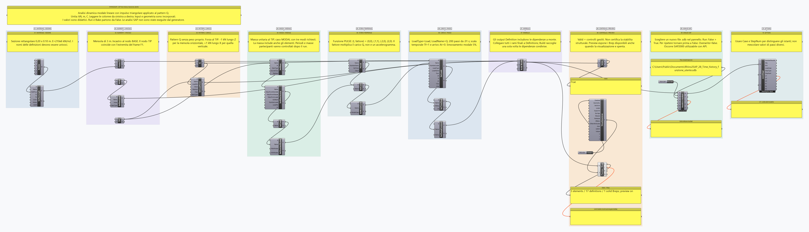
28 Time history funzione utente
Analisi dinamica modale lineare con impulso triangolare applicato al pattern Q.
Analisi SAP su richiestaApri GH · GHX · Guida
01 Modello · 02 Materiali · 03 Sezioni beam · 07 Elementi · 08 Vincoli e molle · 11 Masse · 12 Load pattern · 13 Carichi nodali · 22 Modale e spettri · 23 Time history · 26 Analisi e file · 27 Risultati nodali · 33 Preview e bake
29 Risposta armonica
Risposta armonica in frequenza con carico di ampiezza unitaria e fase zero.
Analisi SAP su richiestaApri GH · GHX · Guida
01 Modello · 02 Materiali · 03 Sezioni beam · 07 Elementi · 08 Vincoli e molle · 11 Masse · 12 Load pattern · 13 Carichi nodali · 22 Modale e spettri · 24 Altri casi dinamici · 26 Analisi e file · 33 Preview e bake
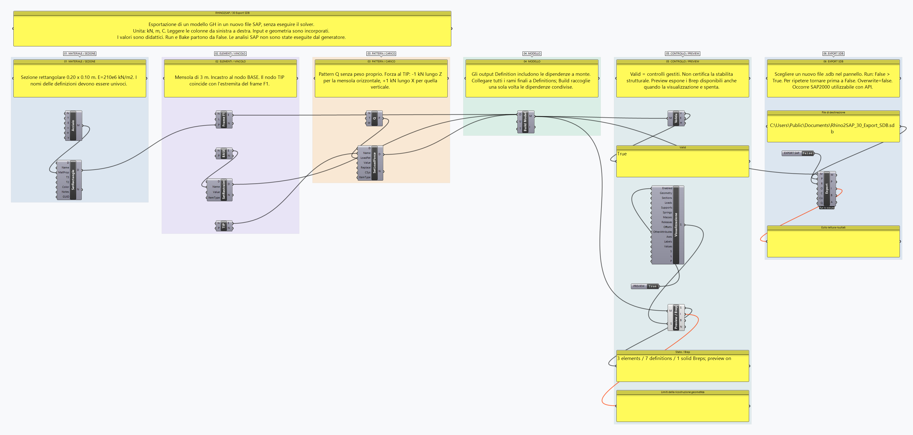
30 Export SDB
Esportazione di un modello GH in un nuovo file SAP, senza eseguire il solver.
Export SAP su richiestaApri GH · GHX · Guida
01 Modello · 02 Materiali · 03 Sezioni beam · 07 Elementi · 08 Vincoli e molle · 12 Load pattern · 13 Carichi nodali · 26 Analisi e file · 33 Preview e bake
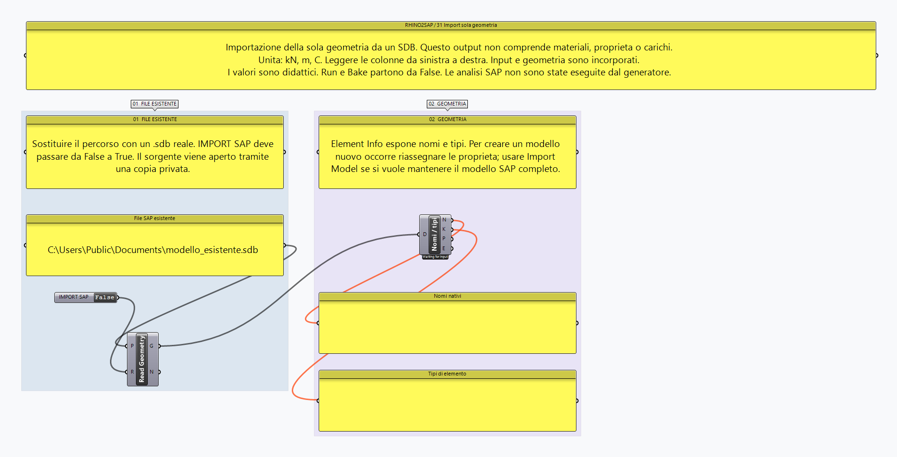
31 Import sola geometria
Importazione della sola geometria da un SDB. Questo output non comprende materiali, proprieta o carichi.
Import SAP su richiestaApri GH · GHX · Guida
26 Analisi e file · 34 Utility
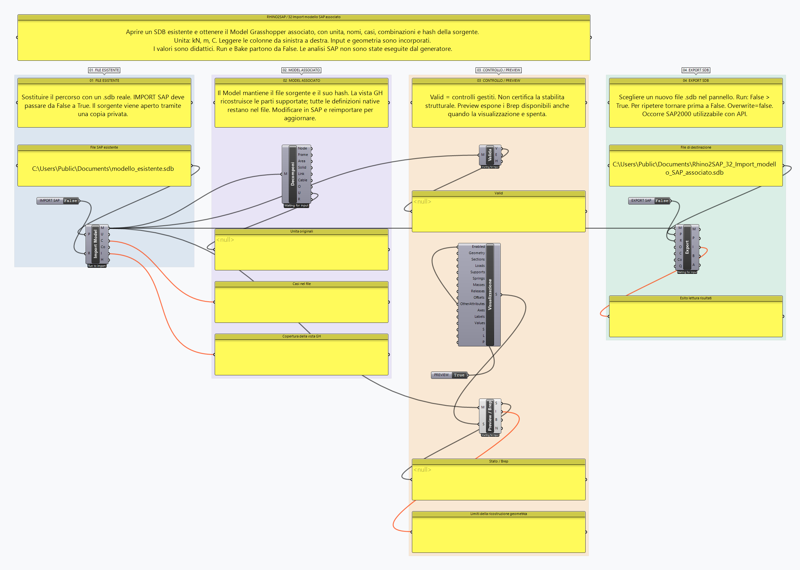
32 Import modello SAP associato
Aprire un SDB esistente e ottenere il Model Grasshopper associato, con unita, nomi, casi, combinazioni e hash della sorgente.
Import SAP su richiestaApri GH · GHX · Guida
01 Modello · 26 Analisi e file · 33 Preview e bake
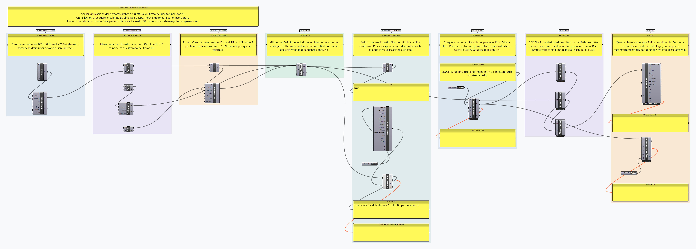
33 Rilettura archivio risultati
Analisi, derivazione del percorso archivio e rilettura verificata dei risultati nel Model.
Analisi e rilettura su richiestaApri GH · GHX · Guida
01 Modello · 02 Materiali · 03 Sezioni beam · 07 Elementi · 08 Vincoli e molle · 12 Load pattern · 13 Carichi nodali · 26 Analisi e file · 28 Risultati beam · 33 Preview e bake
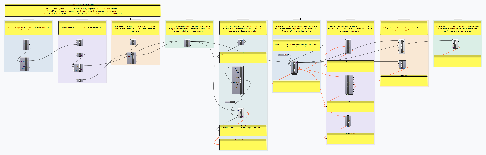
34 Risultati beam diagrammi deformata
Risultati nel beam, interrogazione delle righe, estremi, diagramma M3 e deformata del modello.
Analisi SAP su richiestaApri GH · GHX · Guida
01 Modello · 02 Materiali · 03 Sezioni beam · 07 Elementi · 08 Vincoli e molle · 12 Load pattern · 13 Carichi nodali · 26 Analisi e file · 28 Risultati beam · 32 Risultati e query · 33 Preview e bake
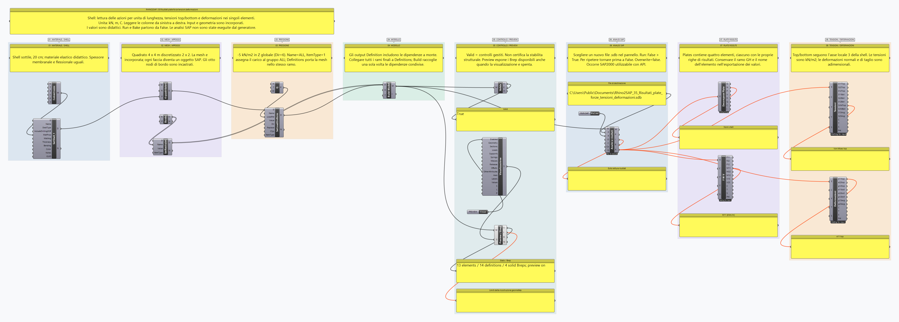
35 Risultati plate forze tensioni deformazioni
Shell: lettura delle azioni per unita di lunghezza, tensioni top/bottom e deformazioni nei singoli elementi.
Analisi SAP su richiestaApri GH · GHX · Guida
01 Modello · 02 Materiali · 05 Piastre e solidi · 07 Elementi · 08 Vincoli e molle · 12 Load pattern · 15 Carichi plate · 26 Analisi e file · 29 Risultati plate · 33 Preview e bake
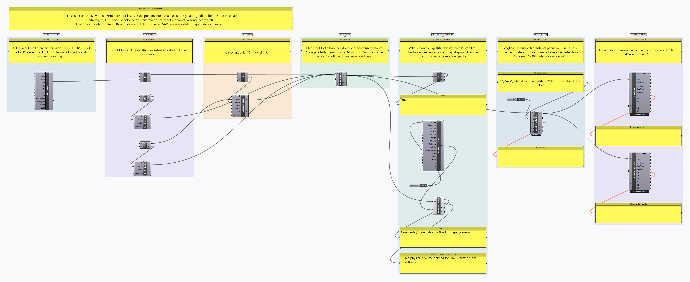
36 Risultati link
Link assiale elastico: K1=1000 kN/m, forza +1 kN. Atteso spostamento assiale 0.001 m; gli altri gradi di liberta sono vincolati.
Analisi SAP su richiestaApri GH · GHX · Guida
01 Modello · 06 Link e cavi · 07 Elementi · 08 Vincoli e molle · 12 Load pattern · 13 Carichi nodali · 26 Analisi e file · 30 Risultati solidi-link · 33 Preview e bake
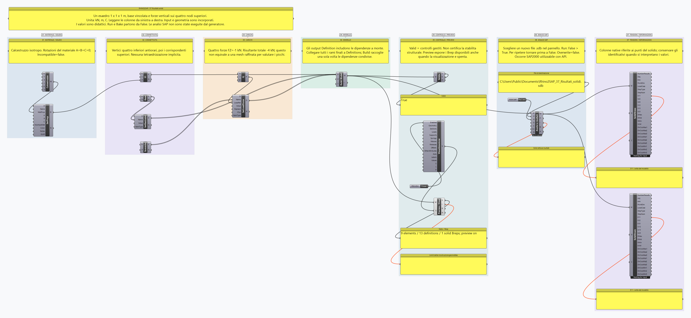
37 Risultati solidi
Un esaedro 1 x 1 x 1 m, base vincolata e forze verticali sui quattro nodi superiori.
Analisi SAP su richiestaApri GH · GHX · Guida
01 Modello · 02 Materiali · 05 Piastre e solidi · 07 Elementi · 08 Vincoli e molle · 12 Load pattern · 13 Carichi nodali · 26 Analisi e file · 30 Risultati solidi-link · 33 Preview e bake
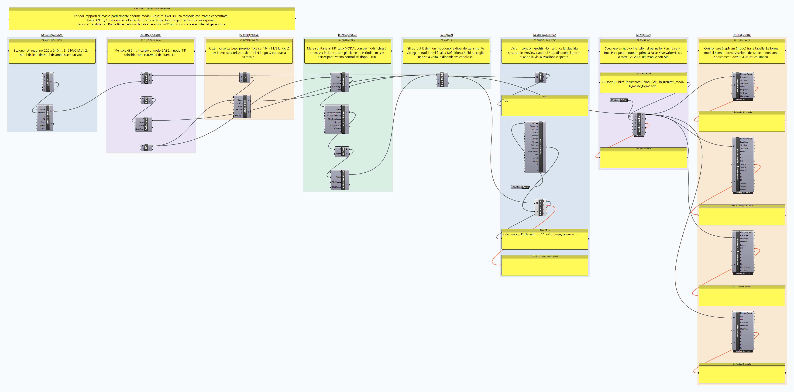
38 Risultati modali masse forme
Periodi, rapporti di massa partecipante e forme modali. Caso MODAL su una mensola con massa concentrata.
Analisi SAP su richiestaApri GH · GHX · Guida
01 Modello · 02 Materiali · 03 Sezioni beam · 07 Elementi · 08 Vincoli e molle · 11 Masse · 12 Load pattern · 13 Carichi nodali · 22 Modale e spettri · 26 Analisi e file · 31 Risultati modali · 33 Preview e bake
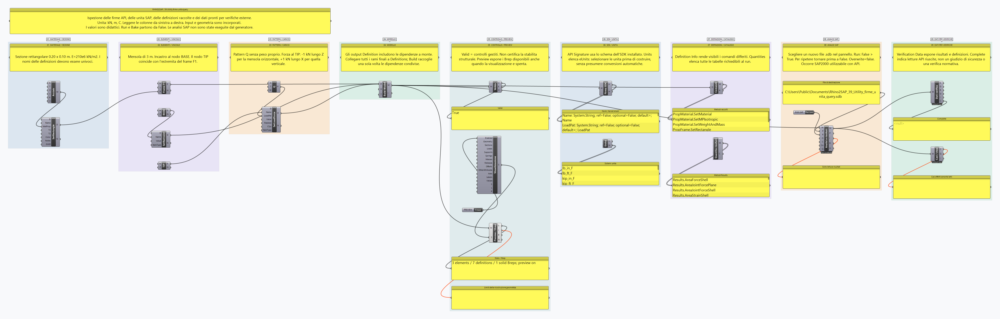
39 Utility firme unita query
Ispezione delle firme API, delle unita SAP, delle definizioni raccolte e dei dati pronti per verifiche esterne.
Modellazione e analisi su richiestaApri GH · GHX · Guida
01 Modello · 02 Materiali · 03 Sezioni beam · 07 Elementi · 08 Vincoli e molle · 12 Load pattern · 13 Carichi nodali · 26 Analisi e file · 32 Risultati e query · 33 Preview e bake · 34 Utility
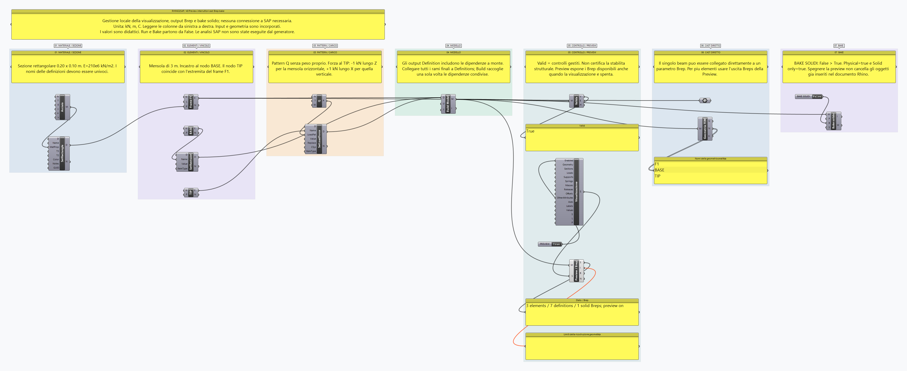
40 Preview interruttori cast Brep bake
Gestione locale della visualizzazione, output Brep e bake solido; nessuna connessione a SAP necessaria.
Modellazione localeApri GH · GHX · Guida
01 Modello · 02 Materiali · 03 Sezioni beam · 07 Elementi · 08 Vincoli e molle · 12 Load pattern · 13 Carichi nodali · 33 Preview e bake
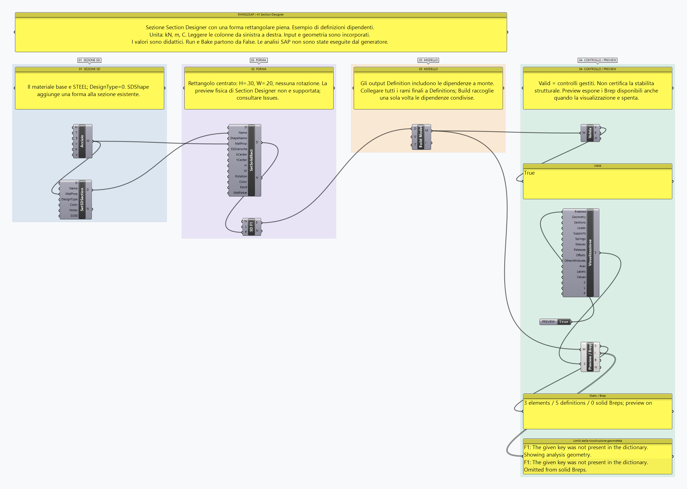
41 Section Designer
Sezione Section Designer con una forma rettangolare piena. Esempio di definizioni dipendenti.
Modellazione localeApri GH · GHX · Guida
01 Modello · 02 Materiali · 04 Section Designer · 07 Elementi · 33 Preview e bake
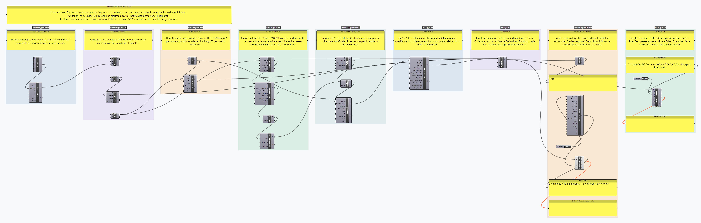
42 Densita spettrale PSD
Caso PSD con funzione utente costante in frequenza. Le ordinate sono una densita spettrale, non ampiezze deterministiche.
Analisi SAP su richiestaApri GH · GHX · Guida
01 Modello · 02 Materiali · 03 Sezioni beam · 07 Elementi · 08 Vincoli e molle · 11 Masse · 12 Load pattern · 13 Carichi nodali · 22 Modale e spettri · 24 Altri casi dinamici · 26 Analisi e file · 33 Preview e bake